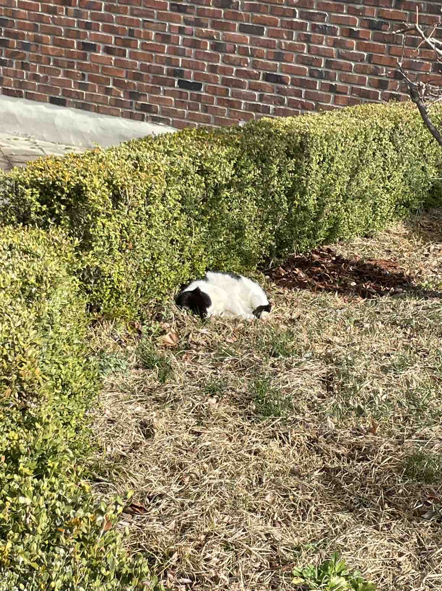
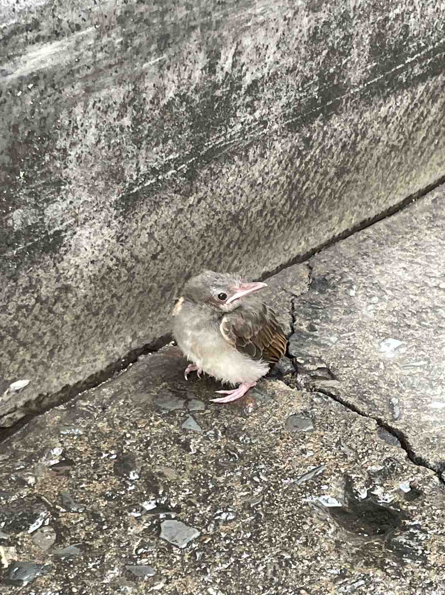
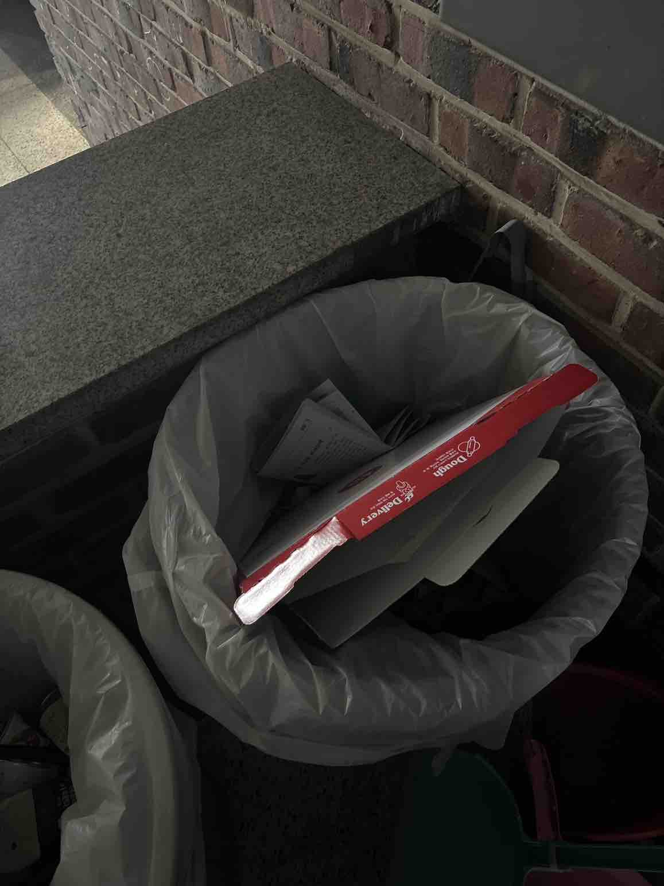
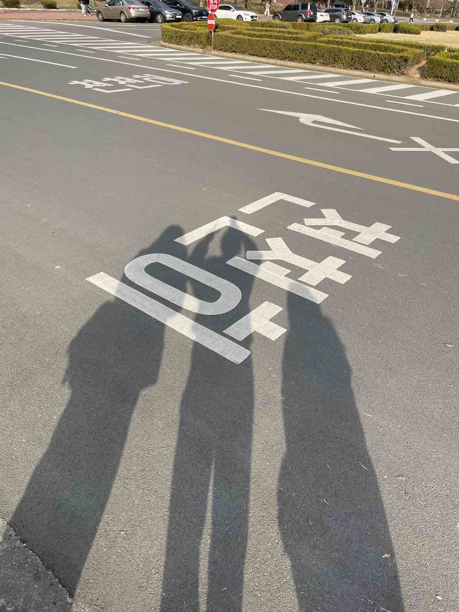
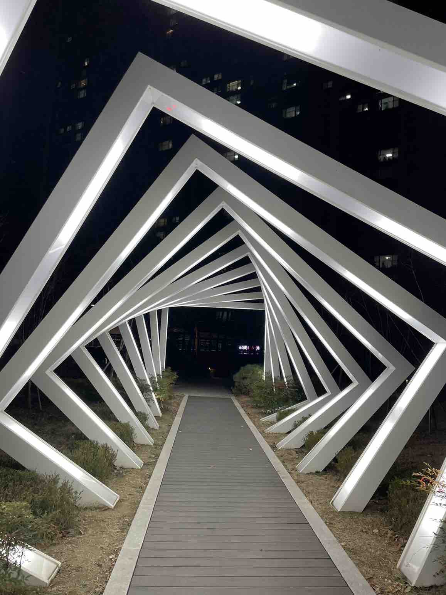
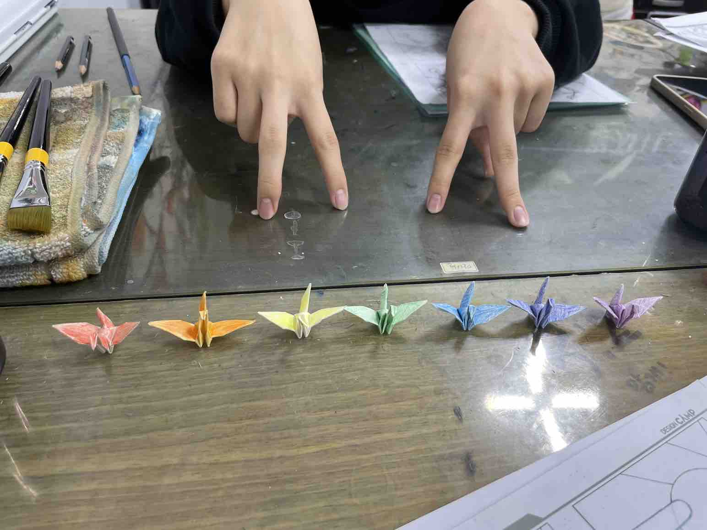
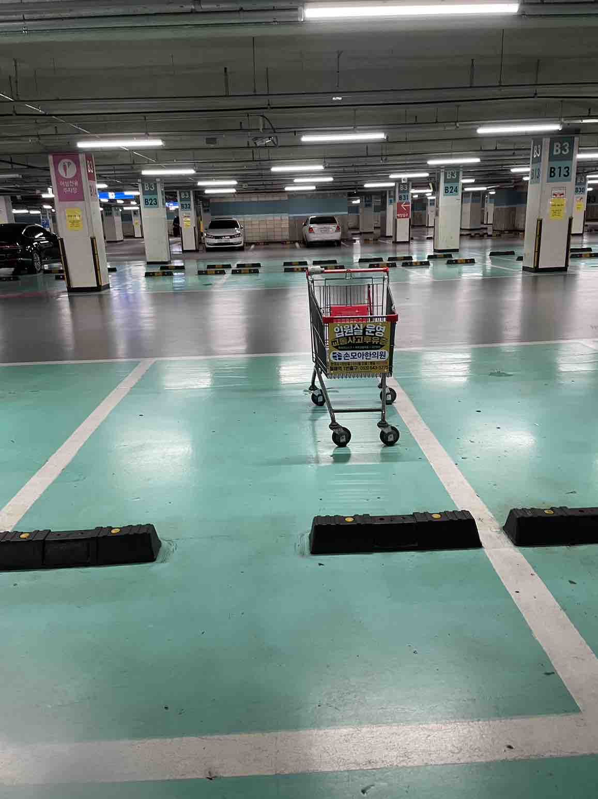
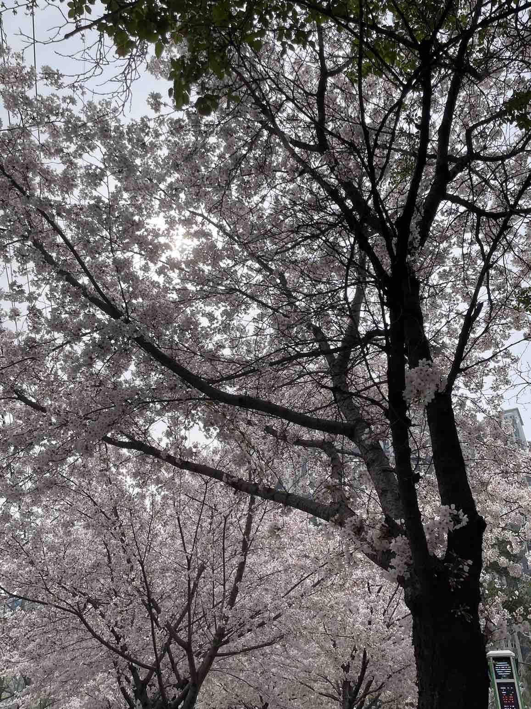
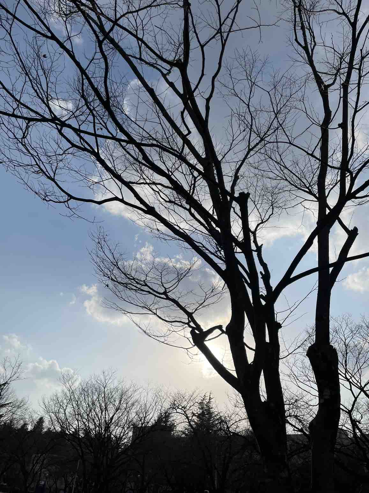
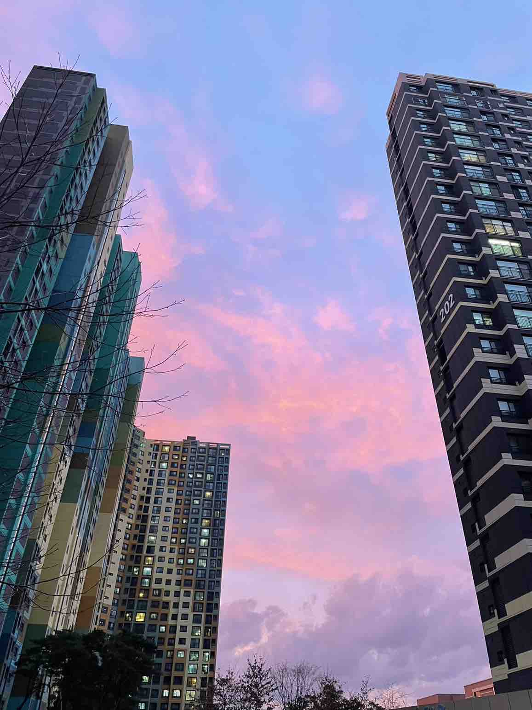

동물
고양이
친구들과 함께 맛있는 점심을 먹고 아무 생각 없이 천천히 디자인관으로 들어갔다. 따뜻한 햇살을 받으며 편히 자는 고양이가 내 눈에 들어왔다. 밥을 먹고 다시 수업을 들으러 가는 길 너무 편하게 잠을 자고 있다. 사람이 지나가든 말든 너무 태평하게 자는 모습이 너무 귀엽기도 했다. 하지만 한편으로 부럽기도 했다
새
비가 오는 날이다. 집으로 가던 길 작은 새가 비를 맞고 있다. 새는 내 손바닥보다 작았다. 자세히 보니 아직 어린 새끼 새다. 근처에 보이는 둥지도 없다. 차가 많이 다니는 도로다. 그 때문에 그냥 지나치기에는 신경 쓰였다. 그래서 근처 안전해 보이는 길에 새를 옮겼다.
일상
버려진 포스터
화요일 학교에 도착했다. 공모전 때문에 친구들과 함께 밤새 만든 포스터가 학교에 붙어 있지 않다. 학교 기둥에 붙어 있어야 할 포스터가 쓰레기통에 처참히 버려져 있다. 나를 포함한 5명 조원의 노력을 누군가 짓밟는 느낌이었다. 다른 의미로 눈길을 끈 모습이었다. 우리 일상에는 긍정적인 것보다 부정적인 일이 더 자연스러운 것이다. 그 때문에 부정적인 것이 오히려 눈에 가고 신경 쓰일 수 있다.
그림자
수업을 마치고 집으로 가는 길 해가 지고 있다. 해 질 녘이라 그림자가 길게 비췄다. 친구들과 함께 직은 그림자라 더욱 의미가 있다. 친해진 시기는 짧다. 하지만 같이 여러 경험과 재미있는 시간을 함께 보냈다. 그래서 이 그림자처럼 친구들과 더욱 길게 뻗어나가는 사이가 되고 싶다.
조형물
저녁을 먹고 산책하러 나갔다. 여러 곳을 다녔다. 그때 어두운 밤 빛나는 곳이 보였다. 가로등이기에는 매우 밝게 빛났다. 그곳으로 가보니 네모로 조형이 된 조형물이 보였다. 아침이라면 그냥 아무 생각 없이 지나갔을 것이다. 하지만 어둠 속에서 밝게 빛나는 조형물이 더욱 강조되었다.
추억
미술학원 알바를 하러 갔다. 이른 시간 알바를 하러 갔다. 학생들이 수다를 떨며 종이접기를 하고 있었다. 나도 학창 시절 학원을 일찍 가는 날이 있었다. 그때 친구와 나도 별을 접거나 보석 십자수 같은 것을 하기도 했다. 그래서인지 학생들이 만드는 종이학이 나의 추억을 되새겨 주었다.
주차된 카트
엄마와 함께 마트에 장으로 보러 갔다. 주차장에 차를 대고 차를 나왔다. 마트로 들어가기 전 조금 웃긴 것을 보았다. 누군가 카트를 주차장에 세워둔 것이다. 눈에 보일 정도로 근처에 카트를 두는 곳이 있었다. 하지만 카트를 주차 칸에 둔 것이 웃기기도 하면서 어이가 없었다.
자연
벚꽃 나무
선만개한 꽃을 보니 드디어 봄이 왔다는 것을 느꼈다. 추운 겨울이 가기만을 기다렸다. 나의 바램을 알아주듯 날씨가 풀리고 있다. 따뜻한 날씨 덕에 벚꽃이지 만개해 하늘을 가득 채웠다. 따뜻한 핑크빛으로 물은 여러 꽃송이가 점차 떨어진다. 떨어진 벚꽃 또한 바닥을 아름다운 핑크빛으로 물들였다.
그림자진 나무
수업을 마치고 잡으러 가는 길이다. 해가 저물고 있다. 해가 지며 그림자가 진 나무 한 그루만 어둡게 보였다. 역광 때문에 나무가 강조되었다. 사진에는 나오지 않지만, 시간이 조금 흐르니 나무가 다시금 밝게 보였다. 시간에 흐름에 빛이 달라졌다. 당연히 아는 것이었다. 하지만 빛이 이렇게 많은 영향을 줄 수 있다는 사실을 다시금 깨달았다.
노을진 하늘
일과를 마치고 집으로 들어가고 있다. 아파트 건물 사이로 노을이 비치면서 하늘이 붉게 물들었다. 구름 사이사이로 보이는 노을이 하늘을 예쁘게 장식했다. 원래도 노을이 잘 보여 딱히 신기해할 것도 없었다. 그리고 내 눈에 뜨일 이유도 없었다. 하지만 일과를 마치고 기분 좋게 집으로 들어가는 길, 예쁘게 물든 하늘이 나를 배웅해 주는 느낌이었다. 그 때문에 더욱 기분이 좋았다.